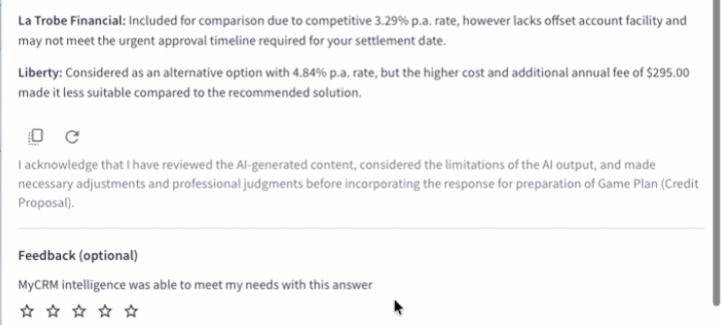

Overview
LMG (Loan Market Group) is Australia and New Zealand's largest mortgage aggregator — 6,000+ brokers and advisers, a $370B loan book, $143B settled in 2025 alone. MyCRM is the #1 broker software platform in AU/NZ, as voted by brokers themselves.
As Head of Design, I led the design of MyCRM Intelligence — LMG's embedded AI suite — and shipped the platform's first AI tools to every broker in the business. I named the assistant suite alongside the Head of Product, co-created the AI strategy with the go-to-market lead for customer products, built LMG's first AI research function from scratch, authored the design standard governing how AI behaves across the entire platform, and won a landmark compliance design decision that set a new precedent for AI disclosure in regulated financial services.
The role ran wider than design. I was co-product manager for My Data Analyst, and I travelled Australia speaking at broker events on behalf of the product and experience teams — presenting the AI assistants and the roadmap directly to the people who would use them.
In 2025, my team won the Tribe Award at LMG's Sync Up — company-wide recognition for being the first to ship AI products on the MyCRM platform.
The Challenge
LMG's Group Executive of Product, Tech and Data put it plainly at the 2026 Growth Summit: "Between 95% and 98% of companies aren't proving ROI in their AI rollout." LMG was determined not to be in that majority. But the challenge wasn't just proving business value — it was navigating one of the hardest design contexts for AI: a highly regulated, high-stakes industry where a poorly framed suggestion could lead to non-compliant advice, client harm, and professional liability.
Mortgage brokers operate under ASIC and the National Consumer Credit Protection Act (NCCP). Every recommendation they make — and every document they lodge — carries legal weight. As LMG's Chief Risk Officer noted at the same summit: "Non-compliance is now the most expensive way to run a business." Introducing AI into that context meant designing for trust, accountability, and auditability simultaneously. It wasn't a UX challenge. It was a regulatory challenge wearing UX clothes.
At the same time, the opportunity was real. Brokers were spending hours per client on documentation — drafting rationales, checking applications for risk, managing compliance paperwork. If we could design AI that actually earned trust in this environment, it would be transformative. If we got it wrong, the consequences would be felt in real people's finances.
Design Strategy & Leadership
I set the design vision on a single principle: the broker is always the author. AI can draft, surface, and flag — but the broker reviews, edits, and owns every output. This isn't just a UX stance; it's the answer to the accountability question regulators ask. If something goes wrong, a human was the author at every critical step. As Whitney Cali later described the product vision: "Brokers are still driving the car, but the AI is helping you get to your destination."
That principle cascaded into every design decision across the platform. But the work I'm most proud of goes beyond a design principle — it's the systems I built to make it real at scale.
Co-owning the AI strategy
The AI strategy wasn't handed to design to execute. I co-created it with the go-to-market lead for customer products — pairing the design and research view of what brokers would actually trust and adopt with the commercial view of how the suite would be positioned, packaged and sold. That partnership meant the roadmap was shaped by user evidence and market reality at the same time, instead of one being retrofitted to the other after the fact.
Naming and framing the assistant suite
Working with the Head of Product, I created the naming convention for every AI assistant on the platform: My + the job it does — My Note Writer, My QA, My Data Analyst, My Documents — sitting under the umbrella of MyCRM Intelligence. The "My" carried over from MyCRM itself, but it did more than maintain brand continuity. It framed each assistant as the broker's own tool, working on their behalf, rather than an external system making decisions about their work. The name did quiet work in service of the authorship principle.
A design framework for building AI products
I created a framework the design team used to build every AI product: how the assistant is introduced and onboarded, how a broker learns to use it, how the output is presented and verified, and how success is measured. Before this existed, each AI feature was being designed as a one-off. Afterwards, every team started from the same set of questions — which meant the answers were consistent across the platform, and brokers learned one mental model instead of four.
The 13-category agentic AI pattern library
I authored LMG's Agentic AI Pattern Library — 13 categories of design standards governing how AI behaves across every surface of MyCRM Intelligence. It covers confidence signalling, progressive disclosure, error recovery, contestability, and human-override states. It was written to pre-empt the Australian Government DTA's AI standards on explainability and contestability before those standards were formalised — so when regulation arrived, we were already compliant.
This pattern library is now the design constitution for everything AI at LMG. New features don't get built without it.
Winning the ASIC/NCCP compliance design decision
The most consequential design decision I made wasn't a layout choice — it was a regulatory argument. Legal and compliance initially required a mandatory checkbox at the point of every AI interaction: a standard CYA disclosure. I argued against it.
The mandatory checkbox would have trained brokers to dismiss AI outputs without reading them — eroding the very trust we were trying to build. Instead, I proposed contextual disclosure at the moment of consequence: when a broker copies an AI-generated note into their application, that's when they're told they're using AI-generated content. At the exact moment it matters, not before.
The argument was accepted. That contextual disclosure pattern is now reused across the entire MyCRM agent suite — a design-led precedent for how AI disclosure should work in regulated financial services.

Building LMG's first AI research function
There was no research function when I arrived. I built it from scratch — establishing the methodology, tooling, and team to run structured research with the MyCRM user base. I had my senior researcher establish a continuous AI research programme rather than one-off studies, so the roadmap stayed connected to what brokers were actually experiencing.
In December she ran a study with approximately 100 brokers to understand their confidence levels with AI, their expectations, what they'd be willing to pay, the tools they were already using, and their existing skill level. The findings were genuinely surprising in places, and they directly reshaped the AI roadmap and influenced executive prioritisation. That study became the largest piece of user research ever conducted with MyCRM users, and the practice it established — dedicated user testing for AI prototypes — is now standard.
A new measurement framework for AI UX
Most teams measure AI success with adoption and thumbs-up rates. That's not enough to understand trust — and in a regulated industry, trust is the product. I developed a 13-behaviour UX measurement framework tracked in Pendo, designed to answer the question no standard analytics dashboard asks: are brokers actually trusting this?
- Copy response rate as a trust proxyWhen a broker copies an AI output into their notes, we treat that as a strong signal of trust. We benchmarked that >30% of thumbs-up sessions should include a copy action. If copy rate is high but thumbs-up is low, something's wrong with the UI — not the AI.
- Citation source click-through rateHow often do brokers click through to verify the AI's source? We expect high engagement early, then a drop-off as trust is established. That curve is the shape of calibrated trust. If it doesn't drop, brokers are over-verifying — a signal that the AI's confidence presentation is wrong.
- Latency-to-sentiment correlationWe map response wait time against thumbs up/down to locate the broker's frustration threshold. This directly informs the chain-of-thought microcopy — the in-progress messaging that keeps brokers engaged during longer retrievals. Benchmark: a flat sentiment curve even when responses exceed 120 seconds.
- WAU & stickiness — the novelty-to-necessity testThe defining question for any AI feature: did brokers use it once and forget it, or does it come back every client? We benchmarked >80% of pilot users returning to the tool for each new client in the researching phase. That's the threshold between novelty and workflow dependency.
Process & Outcomes
We launched My Note Writer first — an AI assistant that automatically drafts lender rationales, product selection notes, and exit strategies from data already in the broker's application file. Outputs are structured, editable, and BID-ready (Best Interests Duty compliant) — giving brokers a compliant foundation for every submission in seconds.
"This would take me 20 minutes to write, now it's done in seconds."— Dustin McMahon, LMG broker
"It speaks better than I do."— Renee Menzies, LMG broker
My QA followed — an AI tool that reviews loan applications across 500+ data points before lodgement, flagging missing information, funding gaps, and potential product mismatches. The design challenge here was cultural as much as functional: brokers initially read a "QA review" as a suggestion that their work wasn't good enough. The reframe that landed was positioning My QA as a second set of expert eyes — a compliance coach, not a critic.
"I don't fear AI. The future for established brokerages is becoming tech-based relationship businesses."— Matthew Atkin, Atlas Broker
My Data Analyst — stepping into product ownership
For My Data Analyst I took on the product as well as the design, working as co-product manager alongside my Head of Design role. It turns a broker's MyCRM data into answers without spreadsheets or manual reports — ask a question, get the answer, save it into the Insights Builder.
Owning the product definition as well as the interface meant I could hold the authorship and trust principles all the way through scoping and prioritisation, not just at the surface. When the trade-off between a faster answer and a verifiable one came up, it wasn't a design opinion being argued into a product decision — it was the same person making both calls.
Taking the roadmap to brokers
Adoption isn't only a product problem. I travelled around Australia speaking at broker events on behalf of the product and experience teams — presenting the AI assistants, walking through the roadmap, and answering the hard questions in the room about accuracy, compliance, and what the tools deliberately would not do.
Standing in front of the people who use the product is also the fastest research loop there is. A lot of what I heard at those events — the hesitations, the workarounds, the features brokers assumed existed — went straight back into the roadmap and into the research programme.
Both tools were piloted with 100+ brokers across Australia and New Zealand before company-wide release in December 2024. By July 2026, more than 3,800 brokers were using My Note Writer and My QA in a single month — around two-thirds of the network — with loan approval times down 18% year-on-year and individual brokers reporting up to 50 minutes saved per application. As Whitney Cali stated at launch: "Our goal is to make every broker an augmented broker: empowered by technology, supported by data, and always in control."
That quote is the one I point to when people ask whether AI features are worth building. The time saved isn't the outcome — what the brokerage does with the time is. Fifty minutes back per application turned into repricing work that generated new leads, which is a business result, not a productivity statistic.
"MyCRM Intelligence saves us 50 minutes per application. We now use that time to reprice and engage our back book, which is already generating new leads and making a real impact on our business."— Tania Richardson, Operations Manager, Loan Market Ellenbrook
I also led the commercial strategy for MyCRM Intelligence — building the pricing and packaging model to turn the AI suite from an included feature into a revenue-generating product tier. Design leadership extended into commercial strategy: how should AI be packaged, priced, and positioned for a business of 6,000 brokers with varying needs and sophistication?
Reflection & Impact
The ASIC disclosure win changed how I think about design leadership. The most impactful design decision on this project wasn't a layout, an animation, or an information architecture choice — it was a regulatory argument made in a meeting with legal and compliance. Design leaders in AI have to be willing to own those conversations. If we leave regulatory decisions to lawyers and compliance teams without a design voice, we get AI that's compliant but unusable. The two have to be designed together.
The measurement framework taught me that most teams are measuring the wrong things. Adoption tells you brokers opened the feature. Thumbs-up tells you they liked an output. Neither tells you whether they trust the AI enough to act on it. Copy rate, citation verification, latency-sentiment correlation — these are the signals that tell you whether you've built something that earns the right to be used in a consequential context.
And the Tribe Award matters more to me than any individual metric. It was the team that won it — eight designers who had to figure out, largely from first principles, what responsible AI design looks like in a regulated industry. That's the work I'm most proud of enabling.